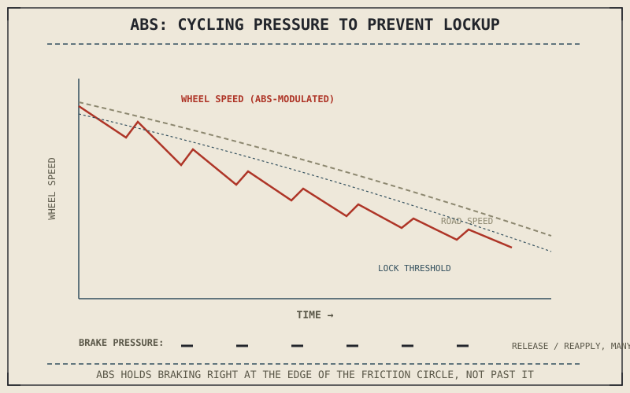

Every chapter in this part has assumed a rider or a hardware system gets brake balance and lever pressure exactly right. Real emergencies rarely cooperate with that assumption — a sudden hazard, a patch of gravel, or simple panic can push braking force past the tyre's available grip before anyone or anything has time to react correctly. ABS exists specifically for that moment, and understanding it closes this part by tying every previous chapter's physics together.
What ABS Actually Detects and Does
Anti-lock braking systems monitor each wheel's rotational speed continuously through a sensor, comparing it against the motorcycle's actual road speed to detect the sudden speed loss that signals a wheel is about to lock — the exact failure mode Chapter 7.1 first described, where demanded braking force exceeds available tyre grip and the tyre begins sliding instead of rolling and gripping. The instant ABS detects that condition approaching, it rapidly reduces, releases, and reapplies hydraulic pressure at that wheel, cycling many times per second, holding braking force as close as possible to the edge of the friction circle from Chapter 6.4 without crossing into an actual slide.
Why This Matters More on a Motorcycle Than a Car
A locked wheel is a problem for any vehicle, but it's a substantially bigger one for a motorcycle specifically because of the two-wheeled balance problem this book's earlier chapters have already established. A locked front wheel loses not just braking force but the gyroscopic and geometric stability Chapter 3's engine chapters and Chapter 4's chassis geometry both depend on, often resulting in an immediate loss of balance rather than simply a longer stopping distance the way a locked wheel typically produces on a four-wheeled car. This is precisely why ABS adoption and its safety impact on motorcycles has been especially significant: it's not just preserving stopping distance, it's preserving the basic balance a two-wheeled vehicle needs to remain upright at all.
A locked wheel doesn't just cost a motorcycle stopping distance the way it does a car — it costs balance itself, since the same rolling wheel this book's chassis and physics chapters depend on for stability is the one ABS is working to keep from locking.

A wheel-speed graph showing brake pressure being rapidly cycled by ABS just before the wheel would lock, holding wheel speed close to the edge of the friction circle rather than letting it drop to zero.
A Common Misconception, Cleared Up Early
It's easy to assume ABS is simply a safety net that makes maximum braking force irrelevant, since the system will supposedly handle any braking mistake automatically. ABS manages wheel lock specifically; it doesn't change the underlying friction circle or the weight-transfer physics Chapter 7.5 and Chapter 7.6 described, and it can't generate more grip than the tyre and road surface actually offer. A rider who understands progressive brake application and front-rear balance still stops more effectively and more predictably than one relying entirely on ABS to compensate for poor technique — ABS is a backstop against locking, not a substitute for everything this part has explained about how braking actually works.
Where This Leads
Part VII is complete. This book has now explained how a motorcycle generates power, delivers it to the wheel, wants to move once chassis geometry is set, stays in contact with an imperfect road, converts that contact into grip through tyre and wheel, and finally sheds its own energy on demand through braking. Every one of these six systems has been explained largely on its own; what remains is the physics connecting all of them at once. Part VIII opens with exactly that: the unifying physics of friction, cornering forces, load transfer, aerodynamics, and gyroscopic effects behind everything this book has covered so far.
Key Concepts to Remember
- ABS monitors wheel speed and rapidly cycles brake pressure to prevent lockup, keeping braking force close to the edge of the tyre's friction circle without crossing it.
- A locked wheel costs a motorcycle its balance, not just stopping distance, making ABS especially significant for two-wheeled vehicles compared to cars.
- ABS prevents lockup but doesn't increase available grip or replace good brake technique — it's a backstop, not a substitute for understanding brake balance.
- Part VII is complete; Part VIII turns to the unifying physics — friction, cornering, load transfer, aerodynamics, and gyroscopic effects — behind everything covered so far.
Cross-References
| ← Ch. 7.1 | First described wheel lock as demanded force exceeding available tyre grip; this chapter shows ABS actively managing that exact failure mode. |
| ← Ch. 6.4 | Established the friction circle as the edge of available grip; this chapter shows ABS working to keep braking force just inside that edge. |
| ← Ch. 7.6 | Explained brake balance as a rider and hardware responsibility; this chapter clarifies that ABS backstops mistakes rather than replacing that responsibility. |
| → Ch. 8.1 | Opens Part VIII with the unifying physics behind everything this book has covered — friction, cornering forces, load transfer, aerodynamics, and gyroscopic effects. |